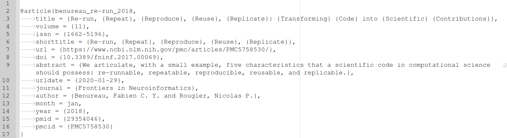
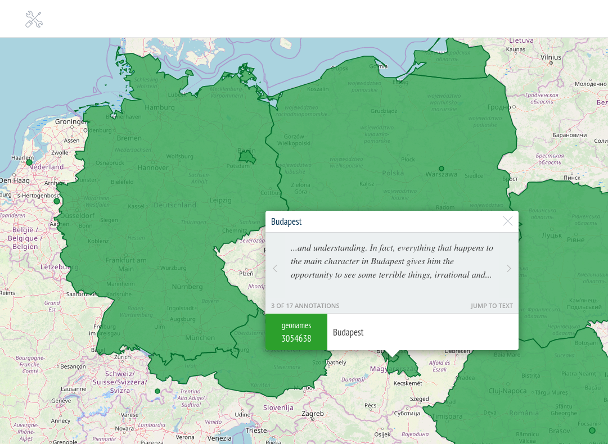

<!doctype html>
<html lang="en">
<head>
<meta charset="utf-8">
<!-- CUSTOMIZE THIS! -->
<title>Offene Publikationsformate</title>
<meta name="author" content="Christof Schöch">
<!-- END -->
<meta name="description" content="Slides">
<meta name="apple-mobile-web-app-capable" content="yes">
<meta name="apple-mobile-web-app-status-bar-style" content="black-translucent">
<meta name="viewport" content="width=device-width, initial-scale=1.0, maximum-scale=1.0, user-scalable=no, minimal-ui">
<link rel="stylesheet" href="css/reveal.css">
<link rel="stylesheet" href="css/theme/simple.css" id="theme">
<!-- Code syntax highlighting -->
<link rel="stylesheet" href="lib/css/zenburn.css">
<!-- Printing and PDF exports -->
<script>
var link = document.createElement( 'link' );
link.rel = 'stylesheet';
link.type = 'text/css';
link.href = window.location.search.match( /print-pdf/gi ) ? 'css/print/pdf.css' : 'css/print/paper.css';
document.getElementsByTagName( 'head' )[0].appendChild( link );
</script>
<!--[if lt IE 9]>
<script src="lib/js/html5shiv.js"></script>
<![endif]-->
</head>

<body>
<div class="reveal">
<div class="slides">
<section data-markdown="" data-separator="^\n-\n" data-separator-vertical="^\n--\n" data-separator-notes="^::" data-charset="utf-8" data-background-image="img/basics/uni-trier-icon.png" data-background-size="50px" data-background-position="top 10px right 10px">
<script type="text/template">

<!-- THIS IS WHERE THE CONTENT GOES! -->
<!-- Any section element inside of this container is displayed as a slide -->

##Offene Publiationsformate für Open Science
<hr/>
<br/>
Prof. Dr. Christof Schöch (Trier)
<br/>
<br/>***Open Access Tage 2020***
<br/>**15.-17.9.2020, Bielefeld**
<br/>
<br/>Folien: https://mimotext.github.io/oam/#/
<br/>
<br/>
<hr/>
</img>&nbsp;&nbsp;&nbsp;</img>


-
# Einleitung

--
## Ziele 
1. Das Verständnis für Open Access fördern <!-- .element: class="fragment" data-fragment-index="1" --> 
1. Dazu motivieren, selbst im Open Access zu publizieren <!-- .element: class="fragment" data-fragment-index="2" --> 
1. Aufzeigen, dass Open Access mehr ist als kostenloses Lesen <!-- .element: class="fragment" data-fragment-index="3" --> 
1. Aufzeigen, dass digitale Publikationen mehr sein können als PDF-Dateien <!-- .element: class="fragment" data-fragment-index="4" --> 


--
## Überblick
1. [Hintergrund und Motivation](#/2)
1. [Open Access für die Maschinen](#/3)
1. [Fazit](#/4)


-
# Open Access für die Maschinen


--
## PDF vs. andere Formate
* PDF-Dateien sind eine digitale Kopie des gedruckten Buchs
* PDF-Dateien sind ein Rezeptionsformat
* Als Referenz- oder Archivformat sind sie ungeeignet
* Frage: Informationen und Formate?

::
- Sehr viele Informationen sind in anderen Formaten besser aufgehoben
- Nicht nur als separate Metadaten, sondern von Anfang den Text so denken
- Kontext "single-source publishing"

--
## Welche Informationen?
1. Bibliografische Angaben <!-- .element: class="fragment" data-fragment-index="1" --> 
1. Textstruktur <!-- .element: class="fragment" data-fragment-index="2" --> 
1. Entitäten (Personen, Orte, Konzepte, Gegenstände) <!-- .element: class="fragment" data-fragment-index="3" --> 
1. Textinhalt (Schlagworte, Kernaussagen) <!-- .element: class="fragment" data-fragment-index="4" --> 

--
## Bibliographien
* in maschinenlesbaren Formaten: BibTex, BibJSON 
* mit persistenten Identifikatoren: DOIs 
* Software unterstützt dabei: Zotero, Citavi, etc. 
* die BibTeX-Datei sollte als Supplement zum Artikel publiziert werden 

--
## Das BibTeX-Format
<small>Benureau, Fabien C. Y., and Nicolas P. Rougier. "Re-Run, Repeat, Reproduce, Reuse, Replicate: Transforming Code into Scientific Contributions." *Frontiers in Neuroinformatics* 11 (January 4, 2018). DOI: https://doi.org/10.3389/fninf.2017.00069.</small>
<br/><br/>
<a href="data/bibtex.bib"></a>

--
## Textstruktur
* Makrostruktur <!-- .element: class="fragment" data-fragment-index="1" --> 
    * Metadaten
    * Haupttext
    * Bibliographie
* Mikrostruktur <!-- .element: class="fragment" data-fragment-index="2" --> 
    * Abstract
    * Einleitung
    * Analyse
    * Zitate
    * Fußnoten
    * Fazit

--
## Ein Artikel in XML-TEI
<br/><a href="data/jtei-oc-ds-schoch-144-source.xml"></a>

--
## Entitäten mit Normdaten
* Entitäten <!-- .element: class="fragment" data-fragment-index="1" --> 
    * Personen (Autoren, historische Figuren, etc.)
    * Orte (Länder, Städte, Straßen, etc.)
    * Organisationen (Verlage, Firmen, NGOs, Ministerien, etc.)
    * Forschungsgegenstände (Romane, Gemälde, Proteine, Viren, etc.)
* Normdaten <!-- .element: class="fragment" data-fragment-index="2" --> 
    * Identifikation (und Disambiguierung)
    * Ergänzung weiterer Informationen
    * GND, VIAF, Wikidata, Geonames, etc.

--
## Beispiel: Ortsnamen in einem Artikel
<a href="https://recogito.pelagios.org/document/kqhzjlljz7tsuc/map"></a>
<small>Quelle: [Recogito in Pelagios](https://recogito.pelagios.org/) angewandt auf: Sautkin & Philippova, *Creativity Studies*, 2018, [URL](https://journals.vgtu.lt/index.php/CS/article/download/5519/4787).</small>

--
## Linked Open Data
* Maschinenlesbare Informationen über die Publikation <!-- .element: class="fragment" data-fragment-index="1" --> 
* Als XML in den Artikel eingebettet <!-- .element: class="fragment" data-fragment-index="2" --> 
* Metadaten einerseits <!-- .element: class="fragment" data-fragment-index="3" --> 
    * Autoren, Publikationsdatum, Publikationsort, etc.
* Auf den Textinhalt bezogen <!-- .element: class="fragment" data-fragment-index="4" --> 
    * erwähnte Entitäten
    * zentrale Aussagen

--
## Linked Open Data

<small>

ISBN:9780141985411 ...
* HAS_TITLE "Weapons of Math Destruction"
* HAS_PUBLICATION_YEAR "2016"
* HAS_SUBJECT "Big Data"
* MENTIONS "Sense Networks"
* HAS_THESIS {"Big Data" REINFORCES "discrimination"}
* HAS_CONCLUSION {"AI" REQUIRES "regulation"}

</small>

--
## Was ermöglichst das? 
* Intelligente Suche über viele Publikationen <!-- .element: class="fragment" data-fragment-index="1" --> 
* Analyse von Zitationsnetzwerken  <!-- .element: class="fragment" data-fragment-index="2" --> 
* Visualisierungen wie Karten, Zeitleisten uvm. <!-- .element: class="fragment" data-fragment-index="3" --> 
* Erheben des Forschungsstands zu einem Thema <!-- .element: class="fragment" data-fragment-index="4" --> 
* Linguistische Analysen der Wissenschaftssprache <!-- .element: class="fragment" data-fragment-index="5" --> 
* uvm... <!-- .element: class="fragment" data-fragment-index="5" --> 

::
- Das alles geht nur, wenn die Informationen nicht von kommerziellen Datenanbietern extrahiert werden, sondern von Anfang an mit den Artikeln frei verfügbar und offen lizenziert erscheinen (!!)


-
# Abschluss

--
## Fazit 

* Open Access ist mehr als kostenfreies Lesen von Publikationen <!-- .element: class="fragment" data-fragment-index="1" --> 
* Digitale Publikationen können mehr sein als digitalisierte Druckerzeugnisse <!-- .element: class="fragment" data-fragment-index="2" --> 
* Open Access und offene Datenformate gehören zusammen <!-- .element: class="fragment" data-fragment-index="3" --> 


--
## Weitere Informationen

* Informationsplattform Open Access: https://open-access.net/startseite
* Directory of Open Access Journals (DOAJ): http://doaj.org/
* Peter Suber: *Open Access* (MIT, 2012): https://mitpress.mit.edu/books/open-access
* Christian Heise: *Von Open Access zu Open Science* (2018), https://meson.press/books/von-open-access-zu-open-science/


--
## Referenzen
<small>
* "Budapest Declaration on Open Access", 2002, https://www.budapestopenaccessinitiative.org/read. 
* "Business Models", in: OADwiki, http://oad.simmons.edu/oadwiki/OA_journal_business_models.
* "Geschäftsmodelle", in: open-access.net, https://open-access.net/informationen-zu-open-access/geschaeftsmodelle
* Eve, Martin Paul, "How much does it cost to run a small scholarly publisher", 2017, eve.gd, https://eve.gd/2017/02/13/how-much-does-it-cost-to-run-a-small-scholarly-publisher/. 
* Piwowar, Heather, Jason Priem, Vincent Larivière, Juan Pablo Alperin, Lisa Matthias, Bree Norlander, Ashley Farley, Jevin West, and Stefanie Haustein. “The State of OA: A Large-Scale Analysis of the Prevalence and Impact of Open Access Articles.” PeerJ 6 (February 13, 2018). https://doi.org/10.7717/peerj.4375.

</small>


--

<br/>
<br/>
### Danke für die Aufmerksamkeit!
<br/>
<br/>
<hr/>
<small>Christof Schöch, <a href="dh.uni-trier.de">DH Trier</a>, 2020, <a href="https://creativecommons.org/licenses/by/4.0/">CC-BY 4.0</a>
<br/>Bildquelle: Howard Miller, <a href="https://commons.wikimedia.org/wiki/File:We_Can_Do_It!.jpg">Wikimedia Commons</a> (public domain)</small>
<hr/>
<br/>
<br/>
</script>
</section>


<!-- DON'T TOUCH UNLESS YOU KNOW WHAT YOU'RE DOING :-) -->
</div>
<script src="lib/js/head.min.js"></script>
<script src="js/reveal.js"></script>
<script>
// Full list of configuration options available at:
// https://github.com/hakimel/reveal.js#configuration
Reveal.initialize({
    controls: true,
    progress: true,
    history: true,
    center: true,
    transition: 'slide', // none/fade/slide/convex/concave/zoom
    // Optional reveal.js plugins
    dependencies: [
        { src: 'lib/js/classList.js', condition: function() { return !document.body.classList; } },
        { src: 'plugin/markdown/marked.js', condition: function() { return !!document.querySelector( '[data-markdown]' ); } },
        { src: 'plugin/markdown/markdown.js', condition: function() { return !!document.querySelector( '[data-markdown]' ); } },
        { src: 'plugin/highlight/highlight.js', async: true, callback: function() { hljs.initHighlightingOnLoad(); } },
        { src: 'plugin/zoom-js/zoom.js', async: true },
        { src: 'plugin/notes/notes.js', async: true }
        ]
    });
</script>
</body>
</html>
